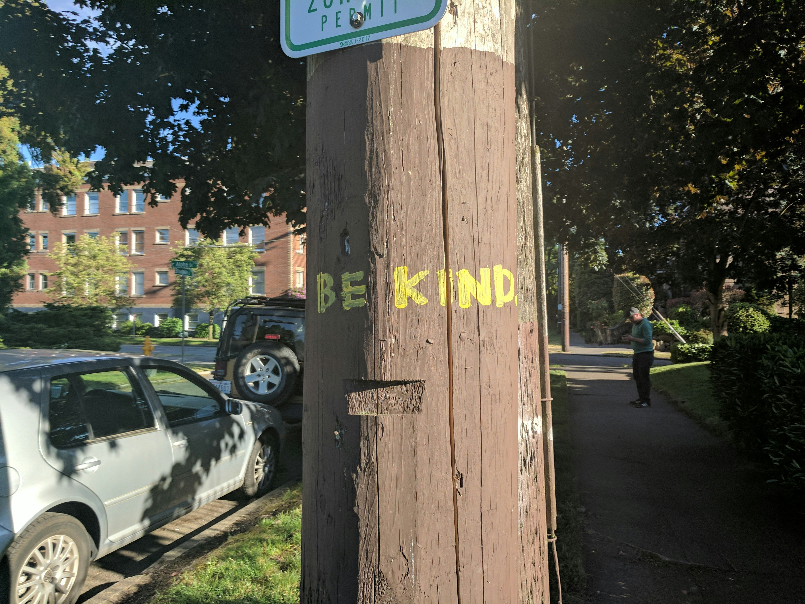

New Community Center Opens Downtown
Published: August 22, 2025 | By: Mike Johnson
After three years of planning and construction, the new Riverbend Community Center officially opened its doors to the public. The 15,000 square foot facility includes a gymnasium, meeting rooms, computer lab, and senior center.
Mayor Susan Davis cut the ribbon at the opening ceremony, joined by city council members and dozens of excited residents. "This center represents our commitment to bringing the community together," Davis said.